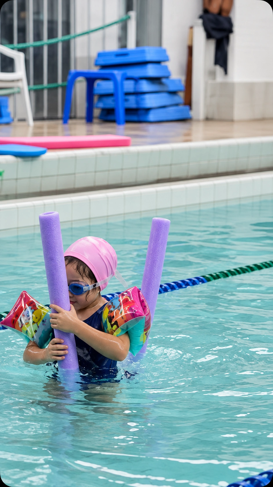
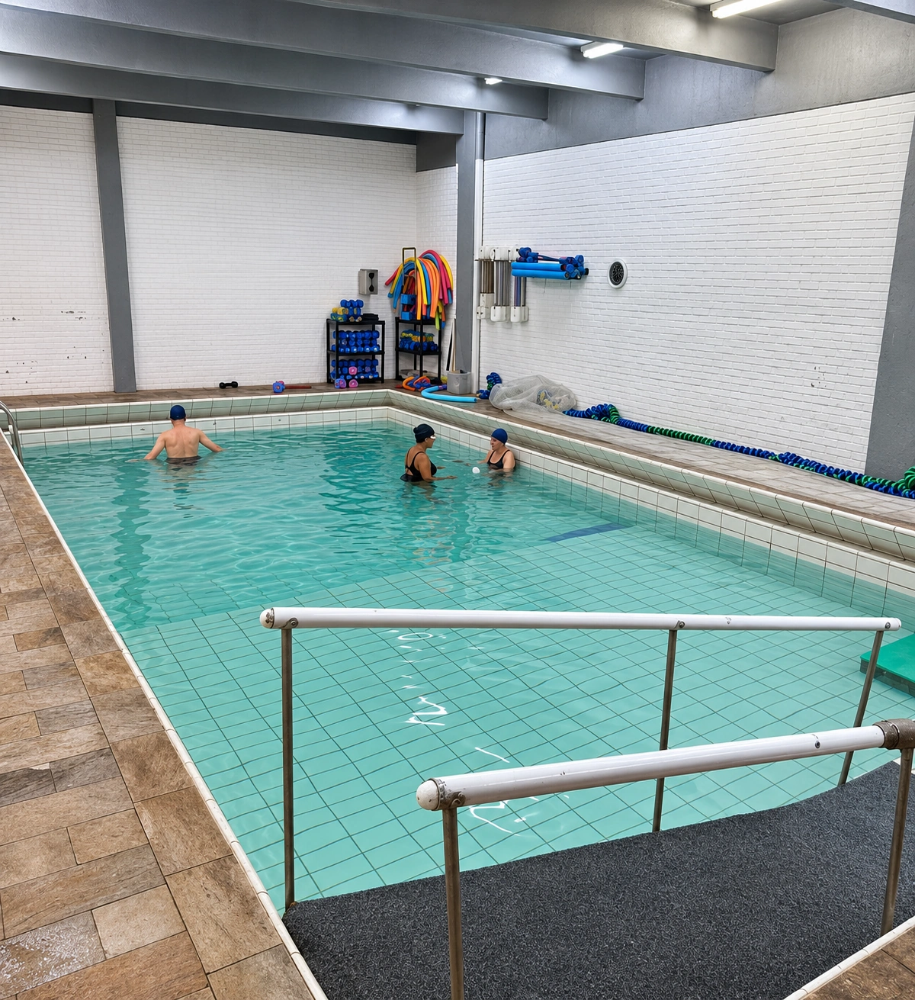
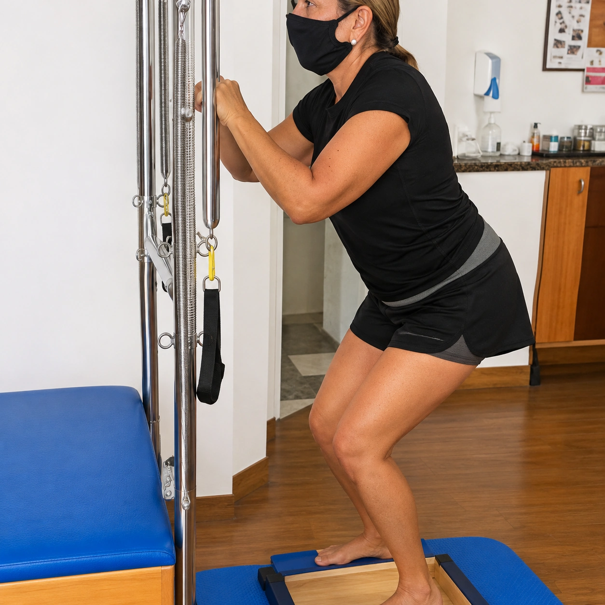
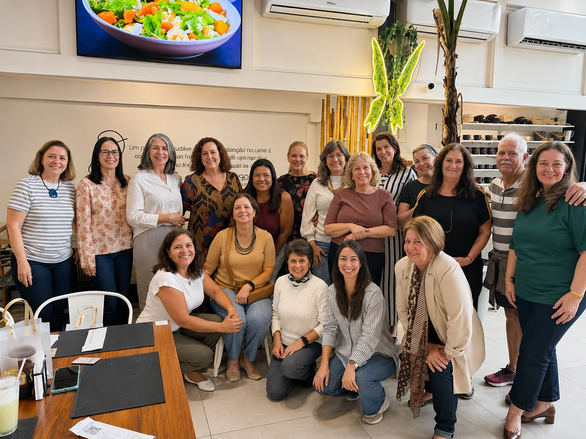
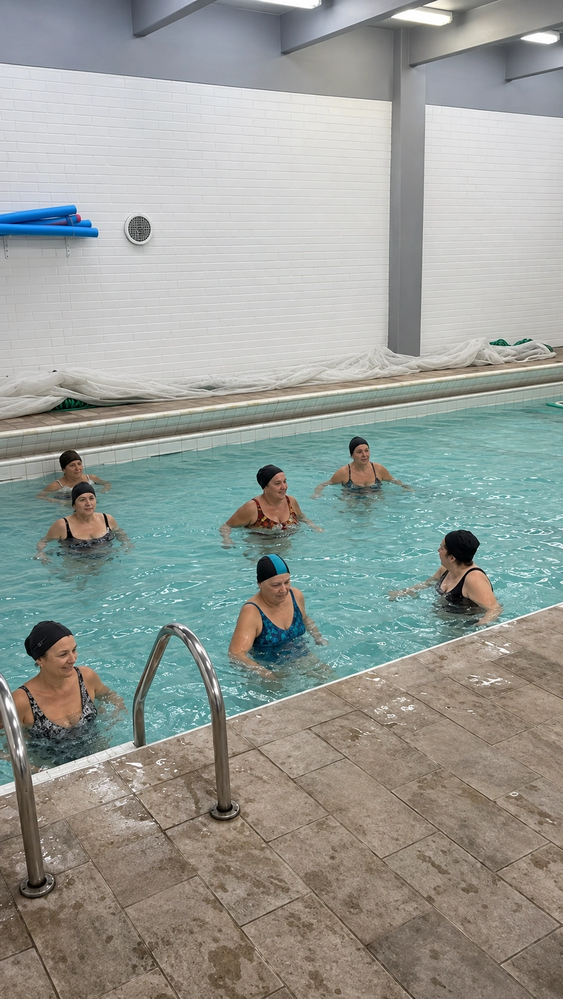
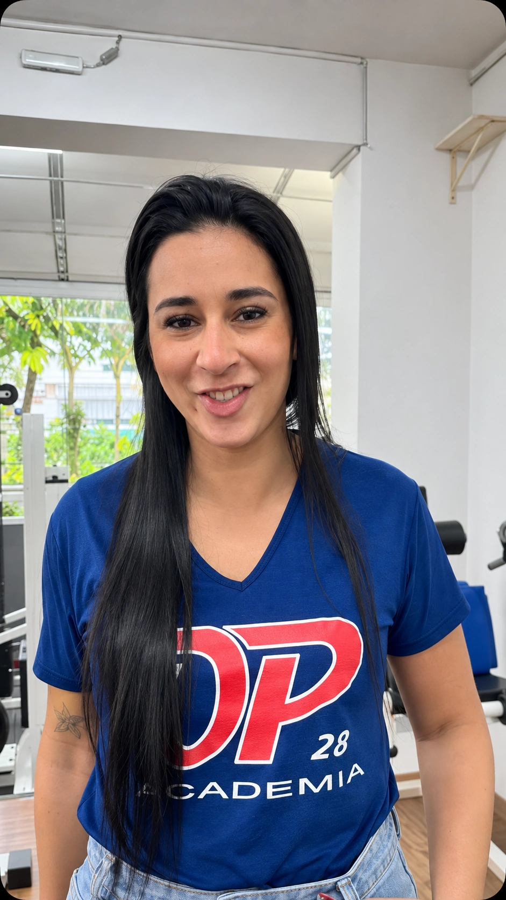

Primeiros mergulhos.
Grandes descobertas.
Natação para bebês e crianças, com atenção em cada nova etapa dentro da água.
Conhecer a nataçãoAparecida, Santos
Na água ou em terra, um lugar para cuidar de você. Encontre sua atividade e venha fazer parte da OP28.

Mais movimento. Mais vida.
No seu ritmo.
Pessoas, encontros e um motivo a mais para se cuidar.
Conheça a OP28
Tem quem chegue para começar. Quem queira voltar. E quem encontre no movimento um novo momento do dia.
A OP28 é uma academia em Santos que coloca a qualidade de vida no centro. Reunimos atividades dentro e fora da água em um ambiente de convivência, com profissionais para acompanhar você em cada etapa.
Descubra o que combina com vocêSeu jeito de se movimentar
Para diferentes fases, objetivos e rotinas.
Explore as modalidades e fale com a equipe
para encontrar a sua turma.

Natação para bebês e crianças, com atenção em cada nova etapa dentro da água.
Conhecer a nataçãoPilates solo e em aparelhos para colocar o corpo em movimento no seu ritmo.
Conhecer o Pilates
Hidroginástica, Hidro-bike, Hidro-jump e Funcional Acqua. Descubra as opções com a equipe.
Ver atividades aquáticasTreine com orientação e converse com a equipe sobre seus objetivos, sua experiência e as possibilidades para começar.
Quero saber sobre musculaçãoConheça as opções de ginástica local, ginástica postural e dança. Consulte a equipe para saber as turmas e os horários disponíveis.
Consultar as turmasFale com a equipe sobre o atendimento em hidroterapia, a avaliação necessária e a disponibilidade.
Conversar sobre hidroterapiaHorários das aulas, vagas e valores: consulte a equipe pelo WhatsApp.
Nosso espaço, seu momento
Da piscina às salas de atividades, conheça de perto os espaços onde a rotina ganha movimento.
Para suas atividades dentro da água.
Uma entrada gradual para a piscina.
Seu momento de atividade com conforto.

Quem vive a OP28
E com as pessoas que fazem parte desse caminho.
Ótima academia, professores muito atenciosos!!!
Uma excelente academia um ambiente acolhedor familiar e excelentes profissionais
Faço hidro e gosto muito das aulas
Pertinho de você
Aparecida · Santos, SP
CEP 11035-181
Das 6h às 21h
Consulte os horários de cada modalidade.Antes de começar
A equipe também está no WhatsApp para ajudar você a escolher sua atividade.
Fale com a equipe pelo WhatsApp e conte qual modalidade você procura. Você recebe as informações sobre planos, valores e disponibilidade para a sua rotina.
Sim, você pode consultar a equipe sobre a aula experimental da modalidade desejada, os horários e a disponibilidade de vagas antes de agendar.
A OP28 oferece natação para bebês e natação infantil. Consulte a equipe sobre as idades atendidas, as turmas e o que levar para a aula.
Conte à equipe como está a sua rotina e o que você procura. Os profissionais podem orientar a escolha da atividade e explicar os próximos passos para começar.
Escolha por onde quer começar. A gente conversa sobre o resto.